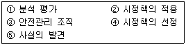
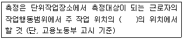
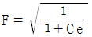
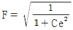
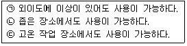
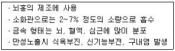
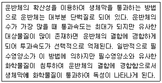

산업위생관리기사 (2011-03-20 기출문제)
1과목: 산업위생학개론
1. 산업안전보건법에서 정의하는 다음 용어에 대한 설명으로 틀린 것은?
- 산업재해 : 근로자가 업무에 관계되는 건설물ㆍ설비ㆍ원재료ㆍ가스ㆍ증기ㆍ분진 등에 의하거나 작업 또는 그 밖의 업무로 인하여 사망 또는 부상하거나 질병에 걸리는 것을 말한다.
- 작업환경측정 : 작업환경의 실태를 파악하기 위하여 해당 작업장에 대하여 근로자 또는 그 대행자가 측정계획을 수립한 후 시료를 채취하고 분석ㆍ평가하는 것을 말한다.
- 근로자대표 : 근로자의 과반수로 조직된 노동조합이 있는 경우에는 그 노동조합을, 근로자의 과반수로 조직된 노동조합이 없는 경우에는 근로자의 과반수를 대표하는 자를 말한다.
- 안전ㆍ보건진단 : 산업재해를 예방하기 위하여 잠재적 위험성을 발견하고 그 개선대책을 수립할 목적으로 고용노동부장관이 지정하는 자가 하는 조사ㆍ평가를 말한다.
(정답률: 60%)

2. 다음 중 스트레스에 관한 설명으로 잘못된 것은?
- 스트레스를 지속적으로 받게 되면 인체는 자기조절 능력을 발휘하여 스트레스로부터 벗어난다.
- 환경의 요구가 개인의 능력 한계를 벗어날 때 발생하는 개인과 환경과의 불균형 상태이다.
- 스트레스가 아주 없거나 너무 많을 때에는 역기능 스트레스로 작용한다.
- 위협적인 환경 특성에 대한 개인의 반응이다.
(정답률: 88%)
3. 다음 중 사무실 공기관리에 있어 오염물질에 대한 관리 기준이 잘못 연결된 것은?
- 일산화탄소 - 10ppm 이하
- 이산화탄소 - 1000ppm 이하
- 포름알데히드(HCHO) - 0.1ppm 이하
- 오존 - 0.1ppm 이하
(정답률: 52%)
4. 다음 중 산업위생의 4가지 주요 활동에 해당하지 않는 것은?
- 예측
- 평가
- 제거
- 관리
(정답률: 85%)
5. 다음 중 사망 또는 영구전노동불능일 때 근로손실일수는 며칠로 산정하는가? (단, 산정기준은 국제노동기구의 기준을 따른다.)
- 3000일
- 4000일
- 5000일
- 7500일
(정답률: 81%)
6. 다음 중 물질안전보건자료(MSDS)의 작성 원칙에 관한 설명으로 틀린 것은?
- MSDS의 작성단위는 「계량에 관한 법률」이 정하는 바에 의한다.
- MSDS는 한글로 작성하는 것을 원칙으로 하되 화학물질명, 외국기관명 등의 고유명사는 영어로 표기할 수 있다.
- 각 작성항목은 빠짐없이 작성하여야 하며, 부득이 어느 항목에 대해 관련 정보를 얻을 수 없는 경우에는 공란으로 둔다.
- 외국어로 되어있는 MSDS를 번역하는 경우에는 자료의 신뢰성이 확보될 수 있도록 최초 작성기관명 및 시기를 함께 기재하여야 한다.
(정답률: 89%)
7. 다음 중 산업피로에 관한 설명으로 틀린 것은?
- 피로는 비가역적 생체의 변화로 건강장해의 일종이다.
- 정신적 피로와 육체적 피로는 보통 구별하기 어렵다.
- 국소피로와 전신피로는 피로현상이 나타난 부위가 어느 정도인가를 상대적으로 표현한 것이다.
- 곤비는 피로의 축적상태로 단기간에 회복될 수 없다.
(정답률: 72%)
8. 다음 중 직업성 질환의 발생 요인과 관련 직종이 잘못 연결된 것은?
- 한냉 - 제빙
- 크롬 - 도금
- 조명부족 - 의사
- 유기용제 - 인쇄
(정답률: 83%)
9. 다음 중 물체의 무게가 8kg이고, 권장무게한계가 10kg일 때 중량물 취급지수(Lifting Index)는 얼마인가?
- 0.4
- 0.8
- 1.25
- 1.5
(정답률: 66%)
10. A 유해물질의 노출기준은 100ppm이다. 잔업으로 인하여 작업시간이 8시간에서 10시간으로 늘었다면 이 기준치는 몇 ppm으로 보정해 주어야 하는가? (단, Brief와 Scala의 보정방법을 적용한다.)
- 60
- 70
- 80
- 90
(정답률: 60%)
11. 우리나라의 규정상 하루에 25kg 이상의 물체를 몇 회 이상 드는 작업일 경우 근골격계 부담작업으로 분류하는가?
- 2회
- 5회
- 10회
- 25회
(정답률: 75%)
12. 다음 중 사고예방대책의 기본원리가 다음과 같을 때 각 단계를 순서대로 올바르게 나열한 것은?

- ③ → ⑤ → ① → ④ → ②
- ③ → ⑤ → ④ → ② → ①
- ⑤ → ③ → ④ → ② → ①
- ⑤ → ④ → ③ → ② → ①
(정답률: 82%)
13. 다음 중 노동적응과 장애에 관한 설명으로 틀린 것은?
- 환경에 대한 인체의 적응한도를 지적한도라 한다.
- 일하는데 가장 적합한 환경을 지적환경라 한다.
- 일하는데 적합한 환경을 평가하는 데에는 생리적 방법 및 정신적 방법이 있다.
- 일하는데 적합한 환경을 평가하는 데에는 작업에 있어서의 능률을 따지는 생산적 방법이 있다.
(정답률: 43%)
14. 다음 중 역사상 최초로 기록된 직업병은?
- 납중독
- 방광염
- 음나암
- 수은중독
(정답률: 83%)
15. 다음 중 산업안전보건법상 중대재해에 해당하지 않는 것은?
- 사망자가 1인 이상 발생한 재해
- 부상자가 동시에 5명 발생한 재해
- 직업성 질병자가 동시에 12명 발생한 재해
- 3개월 이상의 요양을 요하는 부상자가 동시에 3명이 발생한 재해
(정답률: 77%)
16. 다음 중 토양이나 암석 등에 존재하는 우라늄의 자연적 붕괴로 생성되어 건물의 균열을 통해 실내공기로 유입되는 발암성 오염물질은?
- 라돈
- 석면
- 포름알데히드
- 다환성방향족탄화수소(PAHs)
(정답률: 81%)
17. 다음 중 직업성 질환에 관한 설명으로 틀린 것은?
- 직업성 질환과 일반 질환을 그 한계가 뚜렷하다.
- 직업성 질환이란 어떤 직업에 종사함으로써 발생하는 업무상 질병을 말한다.
- 직업성 질환은 재해성 질환과 직업병으로 나눌 수 있다.
- 직업병은 저농도 또는 저수준의 상태로 장시간 걸쳐 반복노출로 생긴 질병을 말한다.
(정답률: 86%)
18. 젋은 근로자에 있어서 약한 쪽 손의 힘은 평균 45kg라고 한다. 이러한 근로자가 무게 8kg인 상자를 양손으로 들어 올릴 경우 작업강도(%MS)는 약 얼마인가?
- 17.8%
- 8.9%
- 4.4%
- 2.3%
(정답률: 58%)
19. 다음 중 산업피로의 대책으로 적합하지 않은 것은?
- 작업과정에 따라 적절한 휴식시간을 삽입해야 한다.
- 불필요한 동작을 피하고 에너지 소모를 적게 한다.
- 동적인 작업은 피로를 더하게 하므로 가능한 한 정적인 작업으로 전환한다.
- 작업능력에는 개인별 차이가 있으므로 각 개인마다 작업양을 조정해야 한다.
(정답률: 82%)
20. 미국산업위생학술원(AATH)에서 정하고 있는 산업위생전문가로서 지켜야 할 윤리강령으로 틀린 것은?
- 기업체의 기밀은 누설하지 않는다.
- 성실성과 학문적 실력면에서 최고 수준을 유지한다.
- 쾌적한 작업환경을 만들기 위한 시설 투자 유치에 기여한다.
- 과학적 방법의 적용과 자료의 해석에 객관성을 유지한다.
(정답률: 88%)
2과목: 작업위생측정 및 평가
21. 입자상 물질 채취기기인 직경분립충돌기에 관한 설명으로 옳지 않은 것은?
- 시료채취가 까다롭고 비용이 많이 소요되며 되튐으로 인한 시료의 손실이 일어날 수 있다.
- 호흡기의 부분별 침착된 입자크기의 자료를 추정할 수 있다.
- 흡입성, 흥곽성, 호흡성입자의 크기별 분포와 농도는 계산할 수 없으나 질량크기분포는 얻을 수 있다.
- 채취준비에 시간이 많이 걸리며 경험이 있는 전문가가 철저한 준비를 통하여 측정하여야 한다.
(정답률: 69%)
22. 측정방법의 정밀도를 평가하는 변이계수(coefficient of variation, CV)를 알맞게 나타낸 것은?
- 표준편차/산술평균
- 기하평균/표준편차
- 표준오차/표준편차
- 표준편차/표준오차
(정답률: 87%)
23. 유량, 측정시간, 회수율, 분석에 따른 오차가 각각 15%, 3%, 9%, 5%일 때 누적오차는?
- 16.8%
- 18.4%
- 20.5%
- 22.3%
(정답률: 64%)
24. 공장 내 지면에 설치된 한 기계에서 10m 떨어진 지점에서 소음이 70dB(A)이었다. 기계의 소음이 50dB(A)로 들리는 지점은 기계에서 몇 m떨어진 곳인가? (단, 점음원 기준이며 기타 조건은 고려하지 않음)
- 200m
- 100m
- 50m
- 20m
(정답률: 51%)
25. 어느 작업장에서 Trichloroethylene의 농도를 측정한 결과 각각 23.9ppm, 21.6ppm, 22.4ppm, 24.1ppm, 22.7ppm, 25.4ppm을 얻었다. 중앙치(median)는?
- 23.0ppm
- 23.1ppm
- 23.3ppm
- 23.5ppm
(정답률: 72%)
26. 어떤 작업장에서 50% Acetone, 30% Benzene 그리고 20% Xylene의 중량비로 조성된 용제가 증ㅂ잘하여 작업환경을 오염시키고 있다. 각각의 TLV는 1600mg/m3, 720mg/m3, 670mg/m3일 때 이 작업장의 혼합물의 허용농도는?
- 873mg/m3
- 973mg/m3
- 1073mg/m3
- 1173mg/m3
(정답률: 68%)
27. 세척제로 사용하는 트리클로로에탈렌의 근로자 노출농도 측정을 위해 과거의 노출농도를 조사해 본 결과, 평균 60ppm이었다. 활성탄관을 이용하여 0.17ℓ/분으로 채취하고자 할 때 채취하여야 할 최소안의 시간(분)은? (단, 25℃, 1기압 기준, 트리클로로에틸렌의 분자량은 131.39, 가스크로마토그래피의 정량한계는 시료당 0.4mg)
- 4.9분
- 7.3분
- 10.4분
- 13.7분
(정답률: 61%)
28. 어느 실험실의 크기가 15m×10m×3m이며 실험중 2kg의 염소(Cl2, 분자량 = 70.9)를 부주의로 떨어뜨렸다. 이 때 실험실에서의 이론적 염소농도(ppm)는? (단, 기압은 760mmHg, 온도 0℃ 기준, 염소는 모두 기화되고 실험실에는 환기장치가 없다.)
- 약 800ppm
- 약 1000ppm
- 약 1200ppm
- 약 1400ppm
(정답률: 47%)
29. 한 소음원에서 발생되는 음에너지의 크기가 1watt인 경우 음향파워레벨(sound power level)은?
- 60dB
- 80dB
- 100dB
- 120dB
(정답률: 56%)
30. 고체 흡착관으로 활성탄을 연결한 저유량 펌프를 이용하여 벤젠증기를 용량 0.012m2으로 포집하였다. 실험실에서 앞부분과 뒷부분을 분석한 결과 총 550μg이 검출되었다. 벤젠증기의 농도는? (단, 온도 25℃, 압력 760mmHg, 벤젠분자량 78)
- 5.6ppm
- 7.2ppm
- 11.2ppm
- 14.4ppm
(정답률: 45%)
31. 다음 용제 중 극성이 가장 강한 것은?
- 에스테르류
- 알콜류
- 방향즉탄화수소류
- 알데하이드류
(정답률: 68%)
32. 알고 있는 공기 중 농도 만드는 방법인 Dynamic Method에 관한 설명으로 옳지 않은 것은?
- 대개 운반용으로 제작됨
- 농도변화를 줄 수 있음
- 만들기가 복잡하고 가격이 고가임
- 지속적인 모니터링이 필요함
(정답률: 79%)
33. 흡착제에 관한 설명으로 옳지 않은 것은?
- 다공성 중합체는 활성탄보다 비표면적이 작다.
- 다공성 중합체는 특별한 물질에 대한 선택성이 좋은 경우가 있다.
- 탄소분자체는 합성다중체나 석유타르 전구체의 무산소 열분해로 만들어지는 구형의 다공성 구조를 가진다.
- 탄소분자체는 수분의 영향이 적어 대기 중 휘발성이 적은 극성 화합물 채취에 사용된다.
(정답률: 43%)
34. 입자상 물질인 흄(fume)에 관한 설명으로 옳지 않은 것은?
- 용접공정에서 흄이 발생한다.
- 흄의 입자크기는 먼지보다 매우 커 폐포에 쉽게 도달되지 않는다.
- 흄은 상온에서 고체상태의 물질이 고온으로 액체화된 다음 증기화되고, 증기물의 응축 및 산화로 생기는 고체상의 미립자이다.
- 용접 흄은 용접공폐의 원인이 된다.
(정답률: 87%)
35. 작업장에서 입자상 물질은 대개 여과원리에 따라 시료를 채취한다. 여과지의 공극보다 작은 입자가 여과지에 채취되는 기전은 여과이론으로 설명할 수 있는데 다음 중 여과이론에 관여하는 기전과 가장 거리가 먼 것은?
- 차단
- 확산
- 흡착
- 관성충돌
(정답률: 61%)
36. 에틸렌 아민(비중 0.832) 1mL를 메스플라스크(100mL)에 가하고 증류수로 홉합하여 100mL되게 한 후 5mL를 취하여 메스플라스크(100mL)에 넣고 증류수로 100mL 되게 했을 때 이 용액의 농도(mg/mL)는?
- 0.416
- 0.832
- 4.16
- 8.32
(정답률: 28%)
37. 다음 기체에 관한 법칙 중 일정한 온도조건에서 부피와 압력은 반비례 한다는 것은?
- 보일의 법칙
- 샤를의 법칙
- 게이-루삭의 법칙
- 라울트의 법칙
(정답률: 75%)
38. 작업환경측정의 단위표시로 옳지 않은 것은?
- 미스트, 흄의 농도는 ppm, mg/L로 표시한다.
- 소음수준의 측정단위 dB(A)로 표시한다.
- 석면의 농도표시는 섬유개수(개/cm3)로 표시한다.
- 고온(복사열포함)은 습구흑구온도지수를 구하여 섭씨온도(℃)로 표시한다.
(정답률: 78%)
39. 검지관 사용시 장단점으로 가장 거리가 먼 것은?
- 숙련된 산업위생전문가가 측정하여야 한다.
- 민감도가 낮아 비교적 고농도에 적용이 가능하다.
- 특이도가 낮아 다른 방해물질의 영향을 받기 쉽다.
- 미리 측정대상물질의 동정이 되어 있어야 측정이 가능하다.
(정답률: 72%)
40. 다음은 고열측정에 관한 내용이다. ( )안에 알맞은 것은?

- 바닥 면으로부터 50cm 이상, 150cm 이하
- 바닥 면으로부터 80cm 이상, 120cm 이하
- 바닥 면으로부터 100cm 이상, 120cm 이하
- 바닥 면으로부터 120cm 이상, 150cm 이하
(정답률: 77%)
3과목: 작업환경관리대책
41. 사이클론 집진장치에서 발생하는 블로우 다운(Blow down)효과에 관한 설명으로 옳은 것은?
- 유효 원심력을 감소시켜 선회기류의 흐트러짐을 방지한다.
- 관내 분진부착으로 인한 장치의 폐쇄현상을 방지한다.
- 부분적 난류 증가로 집진된 입자가 재비산 된다.
- 처리배기량의 50% 정도가 재 유입되는 현상이다.
(정답률: 53%)
42. 전체 환기를 실시하고자 할 때 고려하여야 하는 원칙과 가장 거리가 먼 것은?
- 먼저 자료를 통해서 희석에 필요한 충분한 양의 환기량을 구해야 한다.
- 가능하면 오염물질이 발생하는 가장 가까운 위치에 배기구를 설치해야 한다.
- 희석을 위한 공기가 급기구를 통하여 들어와서 오염물질이 있는 영역을 통과하여 배기구로 빠져나가도록 설계해야 한다.
- 배기구는 창문이나 문 등 개구 근처에 위치하도록 설계하여 오염공기의 배출이 충분하게 한다.
(정답률: 70%)
43. 물질의 대치로 옳지 않은 것은?
- 성냥 제조시에 사용되는 적린을 백린으로 교체
- 금속표면을 블라스팅할 때 사용재료로 모래 대신 철구슬(shot) 사용
- 보온재로 석면 대신 유리섬유나 암면 사용
- 주물공정에서 실리카 모래 대신 그린(green) 모래로 주형을 채우도록 대치
(정답률: 69%)
44. 방진재료로 사용하는 방진고무의 장점과 가장 거리가 먼 것은?
- 내후성, 내유성, 내약품성이 좋아 다양한 분야의 적용이 가능하다.
- 여러 가지 형태로 된 철물에 견고하게 부착할 수 있다.
- 설계 자료가 잘 되어 있어서 용수철 정수를 광범위하게 선택할 수 있다.
- 고무의 내부마찰로 적당한 저항을 가지며, 공진시의 진폭도 지나치게 크지 않다.
(정답률: 67%)
45. 국소배기시스템을 설계시 송풍기 전압이 136mmH2O, 필요한 기량은 184m3/min였다. 송풍기의 효율이 60%일 때 필요한 최소한의 송풍기 소요 동력은?
- 2.7 kW
- 4.8 kW
- 6.8 kW
- 8.7 kW
(정답률: 65%)
46. 정방형 송풍관의 단경 0.13m, 잠경 0.26m, 길이 30m, 속도압 30mmH2O, 관마찰계수(λ)가 0.004일 때 관내의 압력손실은? (단, 관의 내면은 매끈하다.)
- 10.6 mmH2O
- 15.4 mmH2O
- 20.8 mmH2O
- 25.2 mmH2O
(정답률: 35%)
47. 벤젠 2kg이 모두 증발하였다면 벤젠이 차지하는 부피는? (단, 벤젠의 비중은 0.88이고 분자량은 78.21℃ 1기압)
- 약 521 L
- 약 618 L
- 약 736 L
- 약 871 L
(정답률: 45%)
48. 레이놀드수(Re)를 산출하는 공식으로 옳은 것은? (단, d : 덕트직경(m), v : 공기유속(m/s), μ : 공기의 점성계수(kg/secㆍm), ρ : 공기밀도(kg/m3))
- Re = (μ × ρ × d)/v
- Re = (ρ × v × μ)/d
- Re = (d × v × μ)/ρ
- Re = (ρ × d × v)/μ
(정답률: 79%)
49. 크롬산 미스트를 취급하는 공정에 가로 0.6m, 세로 2.5m로 개구되어 있는 포위식 후드를 설치하고자 한다. 개구면상의 기류분포는 균일하고 제어속도가 0.6m/s일 때, 필요송풍량은?
- 24 m3/min
- 35 m3/min
- 46 m3/min
- 54 m3/min
(정답률: 37%)
50. 개인보호구 중 방독마스크의 카트리지의 수명에 영향을 미치는 요소와 가장 거리가 먼 것은?
- 흡착제의 질과 양
- 상대습도
- 온도
- 오염물질의 입자 크기
(정답률: 56%)
51. 유입계수를 Ce라고 나타내면 유입손실계수 F를 바르게 나타낸 것은?
- F = Ce2/1 - Ce2
- F = (1 - Ce2)/Ce2


(정답률: 56%)
52. 귀마개 장점으로 맞는 것만을 짝지은 것은?

- ㉠㉡
- ㉡㉢
- ㉠㉢
- ㉠㉡㉢
(정답률: 70%)
53. 원심력 송풍기 중 전향 날개형 송풍기에 관한 설명으로 옳지 않은 것은?
- 송풍기의 임펠러가 다람쥐 챗바퀴 모양으로 생겼다.
- 송풍기 깃이 회전방향과 반대 방향으로 설계되어 있다.
- 큰 압력손실에서 송풍량이 급격하게 떨어지는 단점이 있다.
- 다익형 송풍기라고도 한다.
(정답률: 67%)
54. 개구면적이 0.6m2인 외부식 장방형 후드가 자유공간에 설치되어 있다. 개구면으로부터 포촉점까지의 거리는 0.5m이고 제어속도가 0.80m/s일 때 필요 송풍량은? (단, 플랜지 미 부착)
- 126 m3/min
- 149 m3/min
- 164 m3/min
- 182 m3/min
(정답률: 60%)
55. 정압회복계수가 0.72이고 정압회복량이 7.2mmH2O인 원형 확대관의 압력손실은?
- 2.8mmH2O
- 3.6mmH2O
- 4.2mmH2O
- 5.3mmH2O
(정답률: 31%)
56. 내경 15mm 원관을 40m/min 속도로 비압축성 유체가 흐른다. 내경 10mm로 되면 (유속m/min)은?
- 90
- 120
- 160
- 210
(정답률: 40%)
57. 다음 중 전기집진장치의 장점으로 옳지 않은 것은?
- 미세입자의 처리가 가능하다.
- 전압변동과 같은 조건변동에 적응이 용이하다.
- 압력손실이 적어 소요동력이 적다.
- 고온 가스의 처리가 가능하다.
(정답률: 65%)
58. 푸쉬-풀(push-pull)후드에 관한 설명으로 옳지 않은 것은?
- 도금조와 같이 폭이 넓은 경우에 사용하면 포집효율을 증가시키면서 필요유량을 대폭 감소시킬 수 있다.
- 제어속도는 푸쉬 제트기류에 의해 발생한다.
- 가압노즐 송풍량은 흡인후드의 송풍량의 2.5~5배 정도이다.
- 공정에서 작업물체를 처리조에 넣거나 꺼내는 중에 공기막이 파괴되어 오염물질이 발생한다.
(정답률: 42%)
59. 1시간에 2ℓ의 MEK가 증발되어 공기를 오염시키는 작업장이 있다. K차를 3, 분자량을 72.06, 비중을 0.8⑤, TLV를 200ppm으로 할 때 이 작업장의 오염물질을 전체 환기시키기 위하여 필요한 환기량(m3/min)은? (단, 21℃, 1기압 기준)
- 약 104
- 약 118
- 약 135
- 약 154
(정답률: 57%)
60. 회전차 외경이 600mm인 레이디얼 송풍기의 풍량은 300m3/min, 송풍기 전압은 60mmH2O, 축동력이 0.40kW이다. 회전차 외경이 1200mm로 상사인 레이디얼 송풍기가 같은 회전수로 운전된다면 이 송풍기의 축동력은? (단, 두 경우 모두 표준공기를 취급한다.)
- 10.2 kW
- 12.8 kW
- 14.4 kW
- 16.6 kW
(정답률: 52%)
4과목: 물리적유해인자관리
61. 다음 중 질소마취 증상과 가장 연관이 많은 직업은?
- 잠수작업
- 용접작업
- 냉동작업
- 알루미늄 재조업
(정답률: 77%)
62. 기온이 0℃이고, 절대습도가 4.57mmHg일 때 0℃의 포화습도는 4.57mmHg 라면 이때의 비교습도는 얼마인가?
- 30%
- 40%
- 70%
- 100%
(정답률: 62%)
63. 다음 중 전리방사선에 의한 장해에 해당하지 않는 것은?
- 참호족
- 유전적 장해
- 조혈기능 장해
- 피부암 등 신체적 장해
(정답률: 71%)
64. 고압환경 하에서의 2차적인 가압현상인 산소중독에 관한 설명으로 틀린 것은?
- 산소의 분압이 2기압이 넘으면 중독증세가 나타난다.
- 중독 증세는 고압 산소에 대한 노출이 중지된 후에도 상당기간 지속된다.
- 1기압에서 순 산소는 인후를 자극하나 비교적 짧은 시간의 노출이라면 중독증상은 나타나지 않는다.
- 산소의 중독 작용은 운동이나 이산화탄소의 존재로 보다 악화된다.
(정답률: 65%)
65. 다음 중 1기압()에 관한 설명으로 틀린 것은?
- 수은주로 760mmHg과 동일하다.
- 수주(水株)로 10332mmH2O에 해당한다.
- torr로는 0.76에 해당한다.
- 약 1kgf/cm2과 동일하다.
(정답률: 67%)
66. 고열로 인하여 발생하는 건강장해 중 가장 위험성이 큰 것으로 중추신경계등의 장해로 신체 내부의 체온 조절계통의 기능을 잃어 발생하며, 1차적으로 정신 착란, 의식결여 등의 증상이 발생하는 고열장해는?
- 열사병(Head stroke)
- 열소진(Heat exhaustion)
- 열경련(Heat cramps)
- 열발진(Heat rashes)
(정답률: 74%)
67. 빛의 단위 중 광도의 단위에 해당하지 않는 것은?
- lumen/m2
- Lambert
- nit
- cd/m2
(정답률: 48%)
68. 다음 중 레이노(Raynaud) 증후군의 발생 가능성이 가장 큰 작업은?
- 공기 해머(hammer) 작업
- 보일러 수리 및 가동
- 인쇄작업
- 용접작업
(정답률: 76%)
69. 다음 중 레이저(Laser)에 관한 설명으로 틀린 것은?
- 레이저는 유도방출에 의한 광선증폭을 뜻한다.
- 레이저는 보통 광선과는 달리 단일 파장으로 강력하고 예리한 지향성을 가졌다.
- 레이저장해는 광선의 파장과 특정 조직의 광선 흡수 능력에 따라 장해출현 부위가 달라진다.
- 레이저의 피부에 대한 작용은 비가역적이며, 수포 색소침착 등이 생길 수 있다.
(정답률: 51%)
70. 밀폐공간에서는 산소결핍이 발생할 수 있다. 산소결핍의 원인 중 소모(consumption)에 해당하지 않는 것은?
- 제한된 공간 내에서 사람의 호흡
- 용접, 절단, 불 등에 의한 연소
- 금속의 산화, 녹 등의 화학반응
- 질소, 아르곤, 헬륨 등의 불활성 가스 사용
(정답률: 65%)
71. 실효음압이 2×10-3N/m2인 음의 음압수준은 몇 dB인가?
- 40
- 50
- 60
- 70
(정답률: 57%)
72. 다음 중 저온에 의한 1차적 생리적 영향에 해당하는 것은?
- 말초혈관의 수축
- 근육긴장의 증가와 전율
- 혈압의 일시적 상승
- 조직대사의 증진과 식용항진
(정답률: 55%)
73. 다음 중 인공 조명에 가장 적당한 광색은?
- 노란색
- 주광색
- 청색
- 황색
(정답률: 86%)
74. 현재 총흡음량이 500sabins인 작업장의 천장에 흡음물질을 첨가하여 900sabins을 더할 경우 소음감소량은 약 얼마로 예측되는가?
- 2.5dB
- 3.5dB
- 4.5dB
- 5.5dB
(정답률: 62%)
75. 다음 중 진동의 크기를 나타내는데 사용되지 않는 것은?
- 변위(displacement)
- 압력(pressure)
- 속도(velocity)
- 가속도(acceleration)
(정답률: 52%)
76. 다음 중 소음계에서 A 특성치는 몇 phon의 등감곡선과 비슷하게 주파수에 따른 반응을 보정하여 측정한 음압수준을 말하는가?
- 40
- 70
- 100
- 140
(정답률: 68%)
77. 다음 중 적외선으로부터 오는 생체 작용과 가장 거리가 먼 것은?
- 색소침착
- 망막손상
- 초자공 백내장
- 뇌막자극에 의한 두부 손상
(정답률: 41%)
78. 충격소음의 노출기준에서 충격소음의 강도와 1일 노출회수가 잘못 연결된 것은?
- 120dB(A) : 10000회
- 130dB(A) : 1000회
- 140dB(A) : 100회
- 150dB(A) : 10회
(정답률: 73%)
79. 다음 중 소음에 의한 청력장해가 가장 잘 일어나는 주파수는?
- 1000Hz
- 2000Hz
- 4000Hz
- 8000Hz
(정답률: 78%)
80. 전리방사선과 비전리방사선의 경계가 되는 광자에너지의 강도로 가장 적절한 것은?
- 12eV
- 120eV
- 1200eV
- 12000eV
(정답률: 77%)
5과목: 산업독성학
81. 입자상 물질의 호흡기계 침착 기전 중 길이가 긴 입자가 호흡기계로 들어오면 그 입자의 가장자리가 기도의 표면을 스치게 됨으로써 침착하는 현상은?
- 충돌
- 침전
- 차단
- 확산
(정답률: 64%)
82. 벤젠에 노출되는 근로자 10명이 6개우러 동안 근무하였고, 5명이 2년 동안 근무하였을 경우 노출인년(person-years of exposure)은 얼마인가?
- 10
- 15
- 20
- 25
(정답률: 56%)
83. 다음 중 기관지와 폐포 등 폐 내부의 공기통롱롸 가스 교환 부위에 침착되는 먼지로서 공기역학적 지름이 30μm 이하의 크기를 가지는 것은?
- 흡입성 먼지
- 호흡성 먼지
- 흉곽성 먼지
- 침착성 먼지
(정답률: 59%)
84. 다음 중 생물학적 모니터링을 할 수 없거나 어려운 물질은?
- 카드뮴
- 유기용제
- 톨루엔
- 자극성물질
(정답률: 73%)
85. 다음 중 먼지가 호흡기계로 들어올 때 인체가 가지고 있는 방어기전이 조합된 것으로 가장 알맞은 것은?
- 점액 섬모운동과 폐포의 대식세포의 작용
- 면역작용과 폐내의 대사 작용
- 점액 섬모운동과 가스교환에 의한 점화
- 폐포의 활발한 가스교환과 대사 작용
(정답률: 71%)
86. 다음 중 인체에 침입한 납(Pb) 성분이 주로 축적되는 곳은?
- 간
- 신장
- 근육
- 뼈
(정답률: 68%)
87. 다음 설명에 해당하는 중금속은?

- 납(Pb)
- 수은(Hg)
- 카드뮴(Cd)
- 안티몬(Sb)
(정답률: 72%)
88. 유해화학물질의 생체막 투과 방법에 대한 다음 설명이 가리키는 것은?

- 촉진확산
- 여과
- 단순확산
- 능동투과
(정답률: 65%)
89. 다음 중 진폐증 발생에 관여하는 인자와 가장 거리가 먼 것은?
- 분진의 노출기간
- 분진의 분자량
- 분진의 농도
- 분진의 크기
(정답률: 68%)
90. 다음 중 급성독성시험에서 얻을 수 있는 일반적인 정보로 볼 수 있는 것은?
- 치사율
- 눈, 피부에 대한 자극성
- 생식영향과 산아장해
- 독성무관찰용량(NOEL)
(정답률: 42%)
91. 다음 중 직업성 피부질환에 관한 설명으로 틀린 것은?
- 가장 빈번한 피부반응은 접촉성 피부염이다.
- 알레르기성 접촉 피부염은 효과적인 보호 기구를 사용하거나 자극이 적은 물질을 사용하면 효과가 좋다.
- 첩포시험은 알레르기성 접촉 피부염의 감작물질을 색출하는 기본수기이다.
- 일부 화학물질과 식물은 광선에 의해서 활성화되어 피부반응을 보일 수 있다.
(정답률: 56%)
92. 다음 중 악영향을 나타내는 반응이 없는 농도수준(Suggested No-Adverse-Response Level, SNARL)과 동일한 의미의 용어는?
- 독성량(Toxic Dose, TD)
- 무관찰영향수준(No Observed Effect Level, NOEL)
- 유효량(Effective Dose, ED)
- 서한도(Threshold Limit Values, TLVs)
(정답률: 61%)
93. 다음 중 직업성 천식의 설명으로 틀린 것은?
- 직업성천식은 근무시간에 증상이 점점 심해지고, 휴일 같은 비근무시간에 증상이 완화되거나 없어지는 특징이 있다.
- 작업환경 중 천신유발 대표물질은 톨루엔 디이소시안산염(TDI), 무수트리엘리트산(TWA)을 들 수 있다.
- 항원공여세포가 탐식되면 T 림프구 중 I 형 살 T 림프구(type I killer T cell)가 특정 알레르기 항원을 인식한다.
- 일단 질환에 이환하게 되면 작업환경에서 추후 소량의 동일한 유발물질에 노출되더라도 지속적으로 증상이 발현된다.
(정답률: 69%)
94. 다음 중 암모니아(NH3)의 인체에 미치는 영향으로 가장 적절한 것은?
- 고농도일 때 기도의 염증, 폐수종, 치아산식증, 위장 장해 등을 초래한다.
- 용해도가 낮아 하기도까지 침투하며, 급성 증상으로는 기침, 천명, 흉부압박감 외에 두통, 오심 등이 온다.
- 전구증상이 없어 치사량에 이를 수 있으며, 심한 경우 호흡부전에 빠질 수 있다.
- 피부, 점막에 작용하며 눈의 결막, 각막을 자극하며 폐부종, 성대경련, 호흡장애 및 기관지경련 등으르 초래한다.
(정답률: 59%)
95. 다음 중 화학적 유해 물질을 생리적 작용에 따른 분류에서 단순 질식제로 작용하는 물질은?
- 아닐린
- 일산화탄소
- 메탄
- 황화수소
(정답률: 59%)
96. 다음 중 작업장에서 발생하는 독성물질에 대한 생식독성평가에서 기형발생의 원리에 중요한 요인으로 작용하는 것과 거리가 먼 것은?
- 원인물질의 용량
- 사람의 감수성
- 대사물질
- 노출시기
(정답률: 47%)
97. 할로겐화 탄화수소인 사염화탄소에 관한 설명으로 틀린 것은?
- 생식기에 대한 독성작용이 특히 심하다.
- 고농도에 노출되면 중추신경계 장애 외에 긴장과 신장장애를 유발한다.
- 신장장애 증상으로 감뇨, 혈뇨 등이 발생하며, 완전 무뇨증이 되면 사망할 수도 있다.
- 초기 증상으로는 지속적인 두통, 구역 또는 구토, 복부선통과 설사, 간압통 등이 나타난다.
(정답률: 59%)
98. 다음 중 단시간 노출기준이 시간가중평균농도(TLV-TWA)와 단기간 노출기준(TLV-STEL) 사이일 경우 충족시켜야 하는 3가지 조건에 해당하지 않는 것은?
- 1일 4회를 초과해서는 안된다.
- 15분 잇아 지속 노출되어서는 안된다.
- 노출과 노출 사이에는 60분 이상의 간격이 있어야 한다.
- TLV-TWA)의 3배 농도에는 30분 이상 노출되어서는 안된다.
(정답률: 65%)
99. 다음 중 만성중독시 코, 폐 및 위장의 점막에 병변을 일으키며, 장기간 흡입하는 경우 원발성 기관지암과 폐암이 발생하는 것으로 알려진 중금속은?
- 연(Pb)
- 수은(Hg)
- 크롬(Cr)
- 베릴륨(Be)
(정답률: 67%)
100. 다음 중 칼슘대사에 장애를 주어 신결석을 동반한 신증후군이 나타나고 다량의 칼슘배설이 일어나 뼈와 통증, 골연화증 및 골수공증과 같은 골격계 장해를 유발하는 중금속은?
- 망간(Mn)
- 카드뮴(Cd)
- 비소(As)
- 수은(Hg)
(정답률: 58%)
해설: 산업재해, 근로자대표, 안전ㆍ보건진단에 대한 설명은 모두 정확하다. 하지만 작업환경측정은 근로자 또는 그 대행자가 아닌, 전문적인 측정기관이 수행하는 것이 일반적이다. 따라서 "해당 작업장에 대하여 근로자 또는 그 대행자가 측정계획을 수립한 후"라는 부분이 틀린 설명이다.